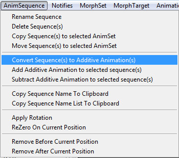
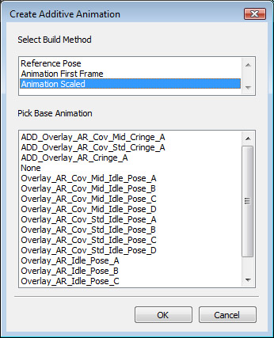
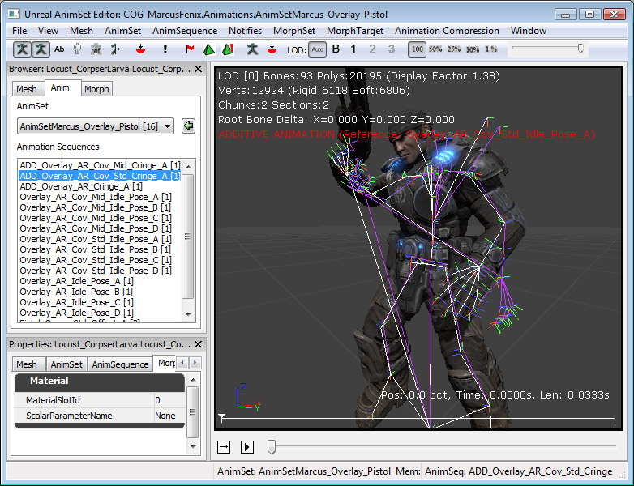
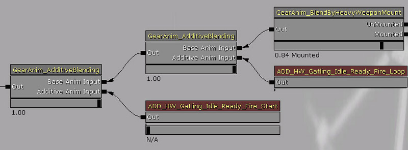
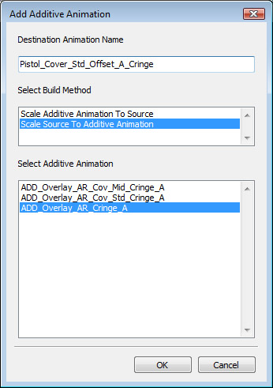

UDN
Search public documentation:
AdditiveAnimations
日本語訳
中国翻译
한국어
Interested in the Unreal Engine?
Visit the Unreal Technology site.
Looking for jobs and company info?
Check out the Epic games site.
Questions about support via UDN?
Contact the UDN Staff
中国翻译
한국어
Interested in the Unreal Engine?
Visit the Unreal Technology site.
Looking for jobs and company info?
Check out the Epic games site.
Questions about support via UDN?
Contact the UDN Staff
Additive Animation
Overview
Additive animations are calculated by subtracting two animations with each other, and is stored as the difference between the two. Additive animations are not really usable by themselves, as it needs to be added to another animation in order for it to work. The idea behind using additive animation, is to find additive poses that can be applied to multiple animations. This reduces the overall number of animations needed for each state. For example a weapon reload animation could be made additive. Now it could be added on top of an idle animation, a walk animation set (forward, back, left and right), and running. So instead of doing a reload while walking forward animation, and all the other combinations, a reload additive is made instead, and added on top of walk forward, run backwards, and so on.
Additive animation verses filters
The weapon reload example above could have also been done using a filter. The reload animation could be played on the upper body of the character, while leaving the lower body to play the idle, walk or run animations. The problem with using a filter is that it completely overrides the upper body. So it would look just as stiff when standing idle, than running resulting in an unnatural animation blend. Even if interpolating the filter weights down the spine and the shoulders, the resulting blend still doesn't look very good. By using an additive animation, both motions (the full body movement and the reload) are preserved, and provide much better looking results.Problems with additive animations
The problem with additive animation, is that adding two animations together doesn't always give you what you want. When built, an additive animation is the difference between two animations. What you get is an additive animation, that works very well on top of that particular animation. But if you use the additive animation with another animation, the result may not be what you're after. You may have guns clipping into faces, character animating unnaturally, etc. So creating and using additive animations is not always an easy process. Generally you'll want to use additive animations on top of animations that are very close to the base pose, and you'll want to use IK Bones to fix errors in limbs. A common problem is using an additive animation that affects the hips and legs of a character, but the result doesn't put the feet on the ground where you'd expect them to be. Using foot placement would solve this problem for example.Creating an Additive Animation
Both animations you want to subtract with each other have to reside in the same AnimSet. Open it up in the AnimSet Editor. Select an animation in the browser. If you want to do Additive = A - B, you will select A first, and then select in the AnimSequence menu in the tool bar Convert Sequence(s) to Additive Animation(s).  Once you have selected that, a dialog will appear:  The first box asks you which method you want to pick to build the additive animation. The operation will be, Destination (Additive) = Source (selected animation) - Base Pose.
- Reference Pose - Use the Skeletal Mesh Bind Pose as the Base Pose.
- Animation First Frame - Use the first frame of the base pose animation.
- Animation Scaled - The base pose animation will be scaled to match the length of the source, and then the subtraction will be performed.
Viewing An Additive Animation
Since an additive animation only represents the different between two animations, it's not something you can view by itself. To help visualize additive animations the base pose is stored along with the additive animation. Thus what you will see playing in the AnimSet Editor is the base pose + additive animation. The skeleton display will also show that. Next to that icon on the tool bar, there is also an icon to view the Base Pose animation. Clicking this will display the Base Pose skeleton in purple. In the screen shot below you can see the two skeletons, and how the additive animation transforms the base pose (purple) into what we see (white). 
Playing an Additive Animation
Additive Animations can be played using two methods in the AnimTree Editor. Either by using an AnimNodeAdditiveBlending node, or by using an AnimNodeSlot.
AnimNodeAdditiveBlending
This node has two inputs. The one is the base pose, and takes a normal animation. The second input takes an additive animation. The slider allows to control the amount of additive animation applied on top of the base pose (0 - 100%). AnimNodeSlot
AnimNodeSlots understand how to handle additive animations. So you don't need to use these in a particular way. Just play an additive animation on it, and instead of overriding the Source input, it will just add the additive animation to it.Additive Animation Manipulation
In the AnimSequence Menu from the AnimSet Viewer tool bar, it is possible to manipulate additive animations.
Addition/Subtraction
By selecting "Add Additive Animation to selected sequence(s)" or "Subtract Additive Animation to selected sequence(s)", you can add or subtract an additive animation to your current selection.  The first box lets you enter the name of the new animation to create. The Second box lets you choose how to combine the two animations together.- Scale Additive To Source - Scales the additive animation to match length of source.
- Scale Source To Additive - Scales the source animation to match length of additive.